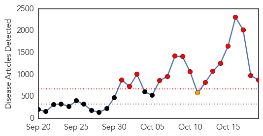
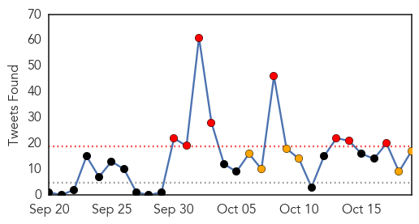
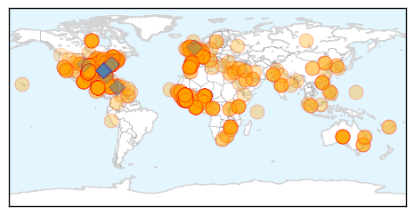

Toggle navigation
Early Warning
Daily Alerts
Ebola
Oct 19, 2014
Compare to:
-
Dengue Fever
Hemmorhagic Fever
Mold/Fungal Infection
Influenza
Meningitis
Pertussis / Whooping Cough
Middle East Respiratory Syndrome
Cholera
Hepatitis
Chikungunya
Yellow Fever
Bubonic Plague
West Nile Virus
Swine Flu
Measles
Unknown
Mumps
30 Day Trends
Web: 16
alerts
, 1
warnings
Twitter: 8
alerts
, 6
warnings
Top Articles:
Showing top 50 articles...
1.000
Mission Unaccomplished: Containing Ebola in Africa
1.000
Ebola patient's family completes 21-day quarantine
1.000
Video: Breaking down Ebola
1.000
St. Marys, Georgia. The Camden County Tribune & Georgian Newspaper local news source.
1.000
MERS virus causes first fatality in Turkey
1.000
Long String of Mistakes Led To Spread of the Ebola Virus
1.000
Latest Ebola News: WHO response against Ebola outbreak in West Africa indicated as a 'failure'
1.000
Researchers try to quell Ebola fears
1.000
Researchers try to quell Ebola fears
1.000
More than a decade later, SARS offers lessons on Ebola
1.000
Containing Ebola in Africa
1.000
Ebola's spread stokes fears about U.S. preparedness
1.000
'We're losing the fight against Ebola'
1.000
North Platte Nebraska's favorite newspaper
1.000
What You Need to Know: How the Ebola Virus Is Spread
1.000
Sierra Leone puts army in charge of Ebola outbreak while cases in US spread
1.000
No one can stay out
1.000
Port director: Test shows health worker not infected with Ebola
1.000
Training to stop pathogens — EMS preps medics to guard against Ebola, more
1.000
Mission unaccomplished: World was slow to contain Ebola outbreak in Africa
1.000
Sierra Leone puts army in charge of Ebola outbreak while cases in US spread
1.000
Health officials issue statement on Ebola threat
1.000
Ebola: ‘Disaster of our generation’
1.000
Loyola Phoenix
1.000
Ebola plan in place at local hospitals
1.000
Report: Ebola response bungled
1.000
The Ebola outbreak has produced some real heroes – but Western governments are not among them
1.000
Ebola in the US: Texas hospital apologises in full-page newspaper advertisement
1.000
Ebola outbreak: Do more to save our countries from tragedy, Liberian leader Ellen Johnson Sirleaf urges West
1.000
Ebola outbreak: British survivor William Pooley returns to Sierra Leone to fight the disease
1.000
Officials say El Paso is ready for Ebola, local hospitals prepare
1.000
Saint Thomas prepares staff for Ebola
1.000
Researchers try to quell Ebola fears in U.S.
1.000
US, Europe vulnerable and concerned about Ebola
1.000
Mission Unaccomplished: Containing Ebola in Africa
1.000
Port director: Test shows health worker not infected with Ebola
1.000
Sierra Leone puts army in charge of Ebola outbreak while cases in US spread
1.000
Ebola Today: Worker on Cruise Ship Cleared; Texas Hospital Admits Mistakes
1.000
Port director: Test shows health worker not infected with Ebola
1.000
Sierra Leone puts army in charge of Ebola outbreak while cases in US spread
1.000
Albany Area officials prepared in event of Ebola case
1.000
Researchers try to soothe nerves jittery over Ebola virus
1.000
Montana scientists diagnose Ebola cases in western Africa
1.000
SARS outbreak a decade ago offers lessons on Ebola
1.000
First Ebola Case Diagnosed In The U.S. Confirmed In Texas: CDC
1.000
Mistakes and Reversals Shake Trust in Ebola Response, in Dallas and Beyond
1.000
An Ebola travel ban would be completely unprecedented – Here’s why
1.000
Inside the world's worst Ebola outbreak
1.000
City calmly prepares for Ebola
1.000
Ebola should be topping the political agenda
Top Tweets:
0.984
cholera treatment is highly effective unlike ebola 'treatment' so i think any ebola vax = quick uptake
0.964
The outbreak in West Africa is the Ebola-Zaire strain.
0.947
Sure. The outbreak in West Africa is the Ebola-Zaire strain.
0.946
Mutation of Ebola to an airborne disease is not likely. Ebola is a very stable virus with a very slow mutation rate. (1/2)
0.913
Morning you all..... Let continue to pray for all ebola affected region. Together Against Ebola is working hard to fight for Ebola to end!
0.889
RT: Ebola craziness: Ebola test is only positive once symptoms develop. Why is government testing a low risk lab worker w…
0.865
Un Plan de Réponse à l’Ebola a été élaboré par le MSPP afin d’empêcher l'entrée dans le pays du virus.
0.859
There is no evidence that mosquitos or other insects can transmit Ebola virus. Only mammals (for example humans (1/2)
0.808
RT: Buried in the Ebola news but the pause in risky flu MERS and SARS studies is a big deal. Curious what's next. http:…
0.805
There is no FDA-approved vaccine or medicine available for Ebola but NIH and DoD are working on investigational vaccines.
0.803
Obama a nommé un coordinateur chargé d'organiser la détection l'isolement et le traitement des personnes touchées par le virus Ebola.
0.801
the virus appears to be becoming more contagious and they are finding more of the virus in the bodies Ebola
https://t.co/73TZWtyis3
0.776
bats monkeys and apes) have shown the ability to become infected with and spread Ebola virus. (2/2)
0.761
RT: Ebola virus is spread through direct contact with the blood or bodily fluids of a person who is sick with Ebola.
http://t.co/…
0.700
RT: The Ebola virus is NOT spread through: casual contact air water food grown or legally purchased in U.S.
http://t.co/DaRfrXy…
0.698
RT: Quote Ebola Alert "Nothing in our history as a country has inspired us as Nigerians than our response to Ebola." http://t.…
0.539
Vomit is a bodily fluid that carries the Ebola virus.
http://t.co/4vkQoW2qqg
Web/News Articles

Tweets

Article Locations

Article Confidences